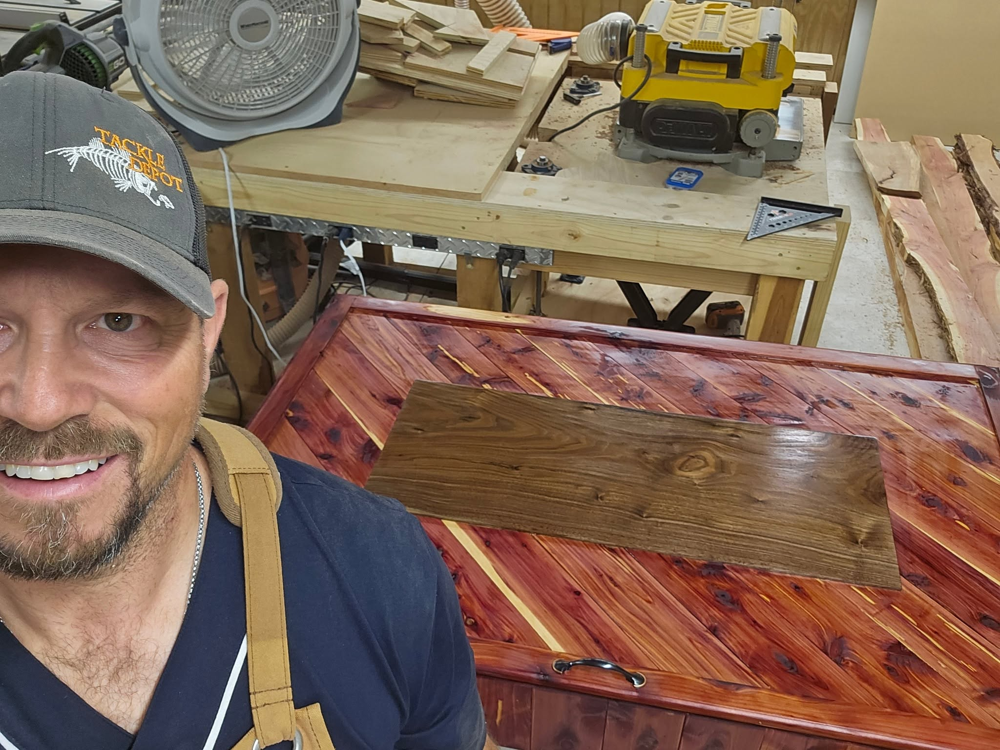

About Me
The story behind the sawdust, the brushes, and the name on the door.

Who I Am
Created By Ham LLC is a one man operation built out of a genuine love for making things with my hands. There’s no showroom, no sales team — just me, in my shop, turning raw lumber and blank canvas into pieces people actually want in their homes.
I got my start building small projects for family and friends, and painting on the side to unwind. Word got around, and what started as a hobby turned into Created By Ham — a small business built on honest work and craftsmanship you can see up close.
Every order, big or small, gets the same attention to detail. If I wouldn’t put it in my own home, I won’t hand it to you.
How I Work
Real materials, real craftsmanship — no shortcuts on anything that leaves my shop.
Handmade takes time. I’ll always give you a realistic timeline and stick to it.
Straightforward pricing based on the work involved — no inflated markups.
I only take on projects I know I can do right — and I stand behind every one.